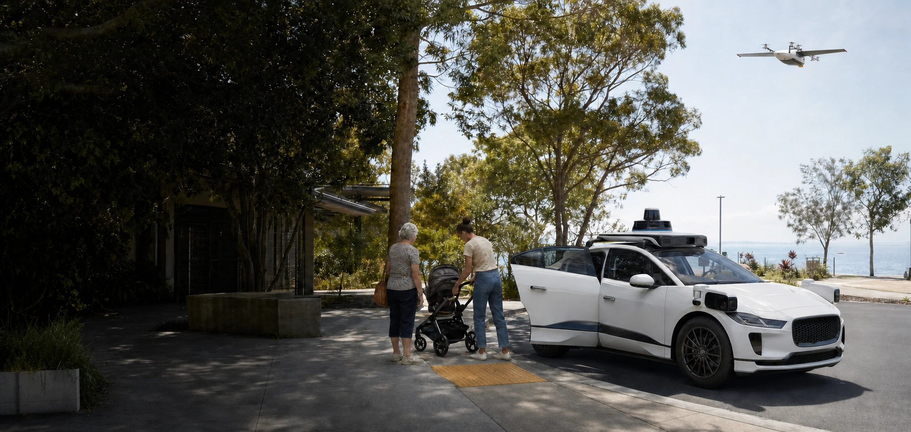

Start with demand
Map actual service gaps, deliveries, maintenance, travel patterns and connection times.
 Sandworm Subterranean SystemsMoreton Bay research & development
Sandworm Subterranean SystemsMoreton Bay research & developmentChapter 12 / 17 · Autonomous mobility
Connect the long-term autonomous mobility vision to realistic service demand and a wet-sand-specific company.
Elon Musk publicly proposed a tunnelling company in December 2016. Early work began in 2017 at SpaceX's Hawthorne site; the company reports its 1.14-mile demonstration tunnel was completed in December 2018 for under US$10 million. That is a company-reported test-track cost, not a complete Australian undersea infrastructure cost or a transferable quote.

Borrow the startup pattern of focused prototypes, iterative equipment design and cost measurement. Sandworm's initial research specialisation is wet silica and heavy-mineral sands. Its product is a modular service and infrastructure system, not a copy of Loop or a promise of passenger tunnels.
Map actual service gaps, deliveries, maintenance, travel patterns and connection times.
Coordinate ferries, buses, community transport and freight rather than assuming replacement.
Utility inspection robots, goods movement and public passenger transport each require different assurance and economics.
Begin with supervised non-public demonstrations. Only consider passengers after full transport, fire, accessibility and emergency requirements are met.
Moreton Bay Autonomous Mobility ↗ develops the broader 24/7/365 service and local participation proposal.
Explore interlocking paving for roads, walking paths and cycleways as a potential recovered-sand manufacturing, stormwater, energy and autonomous maintenance research programme.
The approximately 1 to 1.5 metre diameter initial tunnel concept is for utilities and robotic servicing, not passenger vehicle tunnels. Passenger transport, freight and other applications may require separate larger infrastructure and their own business cases. Develop the utility maintenance robotics as an independent research and enterprise capability.
Include all bay and Broadwater islands with existing infrastructure, regardless of council or electoral boundaries.
Minjerribah (North Stradbroke), Mulgumpin (Moreton), Bribie, South Stradbroke, Coochiemudlo, Russell, Macleay, Lamb, Karragarra and the other islands of Moreton Bay and the adjoining Broadwater. Consider existing land, marine and subterranean services together. The geographic programme is independent of council or electorate boundaries, while actual approvals and asset responsibilities still apply.
| Island or group | Infrastructure context to inventory |
|---|---|
| Minjerribah | Established settlements, ferry, road and utility networks. |
| Mulgumpin | Settlements, resorts, independent power, water and wastewater systems, campgrounds and marine access. |
| Bribie | Established residential, road, utility and mainland connections. |
| South Stradbroke | Resort and private infrastructure, campgrounds and marine access; current condition and operation to verify. |
| SMBI | Existing water, electricity, ferries, local roads and individual wastewater infrastructure. |
| Coochiemudlo | Established residential and visitor services and ferry access. |
| Teerk Roo Ra (Peel), St Helena and other islands | Visitor, conservation, heritage, navigation, marine and other limited assets where applicable. No assumption that new construction is desirable. |
Build an asset-level inventory rather than classifying lightly serviced islands as empty. Evaluate shared manufacturing, autonomous maintenance, compute, energy and transport across the region even where physical tunnel connections are unsuitable. The inventory is preliminary and must be verified with asset owners and relevant rights holders.
The Gumpi Town Tunnel Loop is the proposed first local passenger mobility project. Its purpose is to connect the town and both ferry terminals with autonomous transport and park-and-ride, rather than force passenger ferry consolidation. Passenger corridors are distinct from the smaller robotic utility corridors. Explore the first-project proposal.
The town loop should support accessible protected walking as a primary mode, alongside appropriately separated autonomous passenger routes. Both connect to surface transport, town destinations and park-and-ride. Recovered excavation material may supply the infrastructure that makes these connections possible.
The Gumpi Town Tunnel Loop is the proposed first project. The growth ambition is to connect every town, major tourism destination and culturally significant place where access is invited and authorised, with a network of underground mobility and services.
A growing island network
Conceptual growth sequence, not a surveyed alignment, station plan or promised construction schedule.
Expand through demonstrated demand, geological evidence, local decision-making and operational capability. The ambition is island-wide accessibility without assuming every destination requires excavation. A connection may end at an appropriate gateway rather than penetrate a sensitive site.
Quandamooka rights holders and relevant custodians determine whether culturally significant places should be connected, where an access point may be located, who can visit, and which information remains restricted. The network must support permissioned access, including bookings, authorised guides, seasonal restrictions or no access where required. It must not publish restricted cultural locations or use a technical permission system as a substitute for consent. Respect protected areas, wildlife, visitor capacity and existing land tenure.
Accessible autonomous vehicles carrying residents, visitors, luggage and people with mobility needs. Explore demand-responsive and scheduled services.
Autonomous freight and delivery vehicles for local businesses, supplies, groceries and maintenance logistics.
Explore interchangeable or purpose-specific modules, transfer interfaces, charging, routing and coordinated fleets, without choosing a vehicle architecture yet.
The 1 to 1.5 metre utility tunnel concept is for robots maintaining infrastructure. Passenger and freight corridors have their own dimensional and safety research requirements.
People and goods can use an underground transport network through appropriate separation, access control, scheduling and safety design. Protected walking remains a transport option in its own right. No mixed-traffic layout, vehicle dimensions, speed or autonomy level has been specified.